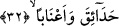
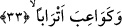

32. (Orada) bahçeler, üzüm bağları,
Orada, içerisinde meyve ağaçları ve üzüm bağları olan bahçeler vardır. Burada
“hadâika
ve
a’nâben/bahçeler
ve
üzüm
bağları”
tâbiri,
yukarda
geçen
“mefâzen/kurtuluş, kurtuluş yeri” kelimesiyle nimetin âm (genel) olarak ifâde
edilmesinin ardından üstünlüğünden dolayı hâs (özel) olarak zikredilmesi kabîlindendir.
Âyetteki “hadâik/bahçeler” kelimesi, mefâzen kelimesini mimli masdar kabul edersek
ondan “bedelu’l-iştimâl”dir. “Bahçe” kelimesiyle “kurtuluş” kelimesi arasındaki
ilişkiye gelince; bilindiği üzere “kurtuluş” iltizami/zorunlu bir delâletle “bahçeler”e
delâlet eder. Buna karşılık “mefâzen” kelimesini ism-i mekan kabul edersek bu takdirde
“hadâika” kelimesi “bedelu’l-ba’z” olur.
“Hadâik” kelimesi, “ağaçlı bahçeler” anlamındaki “hadîka” kelimesinin çoğuludur.
Etrâfı duvarla çevrilmiş her bahçeye Arapçada hadîka denilir. Şu halde hadîka
denildiğinde etrafı çevrili, içinde hurma ve meyva ağaçları bulunan bahçe anlaşılır.
Müfredat’ta ifâde olunduğuna göre, hadîka içinde suyu olan yeryüzü parçasının adıdır.
Böyle bir yere hadîka denmesi, biçim itibariyle ve içinde su olması dolayısıyla gözün
siyah yuvarlağına benzetilmesinden dolayıdır.
Âyetteki “a’nâb” kelimesi “ineb” kelimesinin çoğuludur. Bâzı âlimler derler ki;
burada üzüm kelimesinin bizzat kendisinin zikredilmesi ve asmasının zikredilmemesi
sebepsiz değildir. Çünkü üzümdeki şeref, onun ağacı olan asmada değil, bizatihi
meyvesinin kendisindedir.
33. Göğüsleri tomurcuk gibi kabarmış yaşıt kızlar,
Âyetteki “kevâib” kâib kelimesinin çoğuludur. Arapçada; “kâibeti’l-mer’etu küûben”
derler ki anlamı “kızın göğüsleri belirip topuk gibi yükseldi” demektir. Buna göre
kevâib; “göğüsleri yuvarlaklaşıp topuk gibi kabararak tomurcuklanan bâkire kızlar”
demektir. Bu biçimdeki kadına Arapçada “nevâhid” de denilir. Nevâhid, nâhid ve
nâhide kelimesinin çoğuludur. Anlamı, kevâib kelimesiyle aynı olup “göğüsleri
tomurcuklanmış ve yükselmeye başlamış kadın” anlamındadır.
“Etrâben” kelimesi “lidât” yâni “yaşları bir” demektir. “Lidât” yaşça eşit kadınlar
anlamında kullanılan bir kelimedir. “Vildetu’r recul” ise yaşça ve doğum tarihi
itibariyle bir kişiye yakın ve onunla aynı olan kişi demektir. “Lidet” kelimesinin elde
edilmesi için “vilde” kelimesinin başındaki vav atılmış ondan bedel olarak da sonuna tâ